Propagazione continua indipendente. P = probabilità target; F = √P.
Durata fisica T = 104.7197551. T = 20 × tau_s; tau_s = pi/(2*g_ref) = 5.235987756, g_ref = 0.3.
Validazione numerica, raggiungimento del target e convergenza dell'ottimizzatore sono criteri distinti. Nessun risultato implica da solo un quantum speed limit.
Tabella CSV · Configurazione · Provenienza
| case | seed | cohort | P_target | F_root | purezza | validato | obiettivo_raggiunto | fluence_modulazione | banda99_peggiore | potenza_sopra_soglia | P_iniziale | P_CRAB | guadagno_GRAPE | iterazioni_GRAPE | gradiente_proiettato_iniziale | gradiente_proiettato_finale | max_fotoni | P_hold_min |
|---|---|---|---|---|---|---|---|---|---|---|---|---|---|---|---|---|---|---|
| 1q | 100 | random | 0.999361 | 0.999681 | 0.999353 | True | True | 50.2419 | 4.68 | 0.171338 | 1.5335e-06 | 1.54502e-05 | 0.999343 | 80 | 0.00261353 | 0.000399289 | 10.0039 | 0.0621667 |
| 1q | 101 | random | 0.999318 | 0.999659 | 0.999275 | True | True | 49.8845 | 4.68 | 0.218156 | 1.55554e-07 | 3.99737e-06 | 0.999321 | 80 | 0.00131208 | 0.000568084 | 10.0061 | 0.0615547 |
| 2q_normalized_independent | 100 | random | 0.997861 | 0.99893 | 0.996809 | True | True | 105.492 | 4.8 | 0.18893 | 2.8478e-08 | 3.95836e-08 | 0.997808 | 80 | 0.000130204 | 0.00132878 | 10.0074 | 0.0701851 |
| 2q_normalized_independent | 101 | random | 0.999056 | 0.999528 | 0.998563 | True | True | 99.2376 | 4.68 | 0.119103 | 5.68053e-09 | 1.67095e-08 | 0.999061 | 80 | 0.000131665 | 0.000434202 | 10.0095 | 0.053268 |
Statistiche: {"count": 2, "probability_mean": 0.9993398506030495, "probability_std_population": 2.1363468251489603e-05, "probability_median": 0.9993398506030495, "probability_min": 0.9993184871347981, "probability_max": 0.9993612140713011, "numerically_valid_count": 2, "validated_goal_count": 2, "validated_goal_fraction": 1.0, "probability_q25": 0.9993291688689239, "probability_q75": 0.9993505323371753, "selection_bias_top_only": false}
Probabilità target senza modulazione: 0.00000000.
Controlli falliti: nessuno
DettagliMaximum number of function evaluations has been exceeded.; STOP: TOTAL NO. OF ITERATIONS REACHED LIMIT
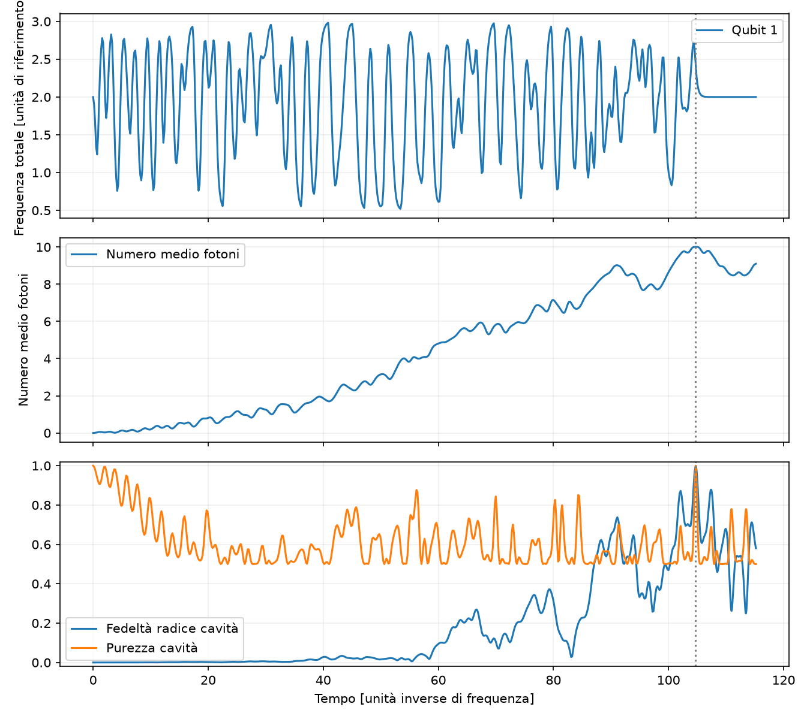
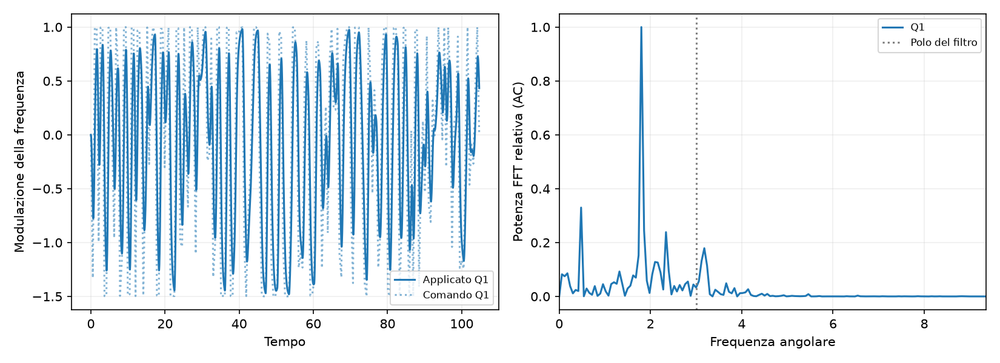
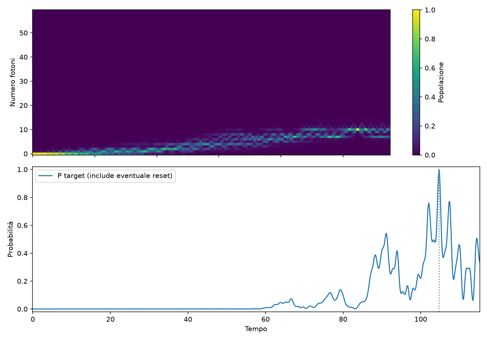
Controlli falliti: nessuno
DettagliMaximum number of function evaluations has been exceeded.; STOP: TOTAL NO. OF ITERATIONS REACHED LIMIT
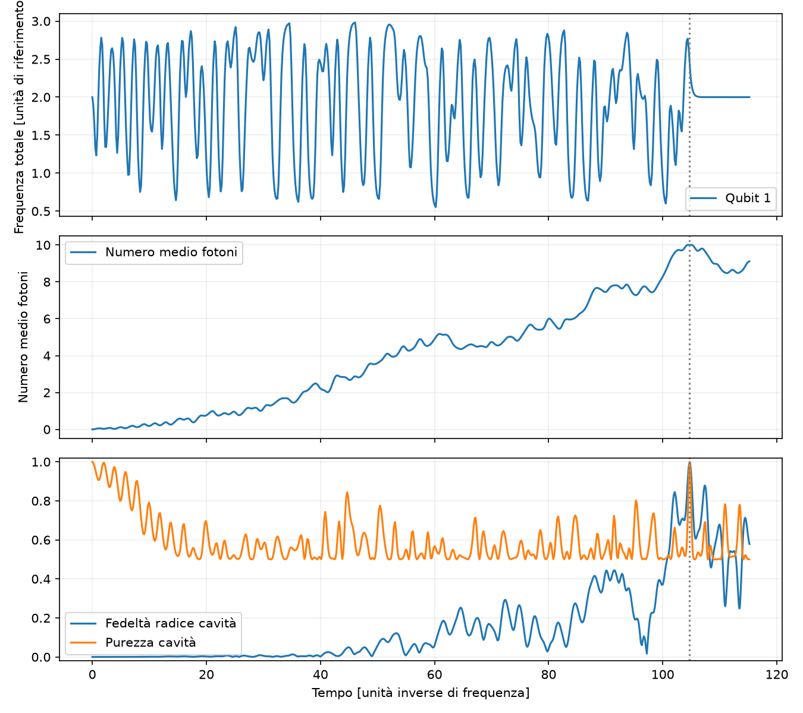
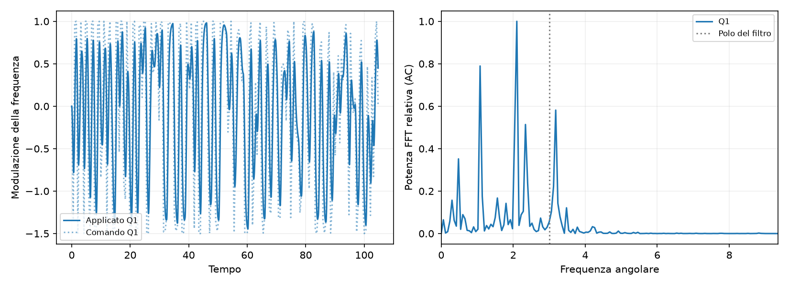
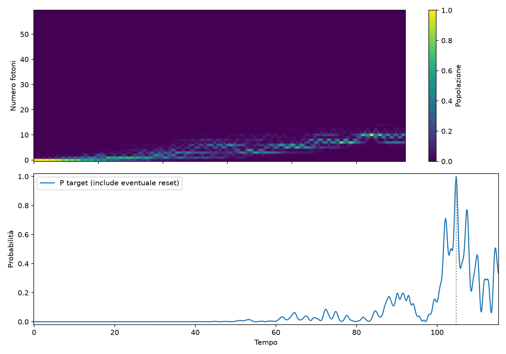
Statistiche: {"count": 2, "probability_mean": 0.9984586648691898, "probability_std_population": 0.0005978034920757769, "probability_median": 0.9984586648691898, "probability_min": 0.9978608613771139, "probability_max": 0.9990564683612655, "numerically_valid_count": 2, "validated_goal_count": 2, "validated_goal_fraction": 1.0, "probability_q25": 0.9981597631231518, "probability_q75": 0.9987575666152276, "selection_bias_top_only": false}
Probabilità target senza modulazione: 0.00000000.
Controlli falliti: nessuno
DettagliMaximum number of function evaluations has been exceeded.; STOP: TOTAL NO. OF ITERATIONS REACHED LIMIT
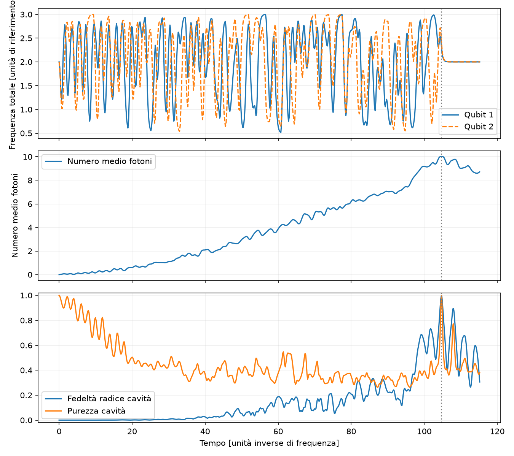
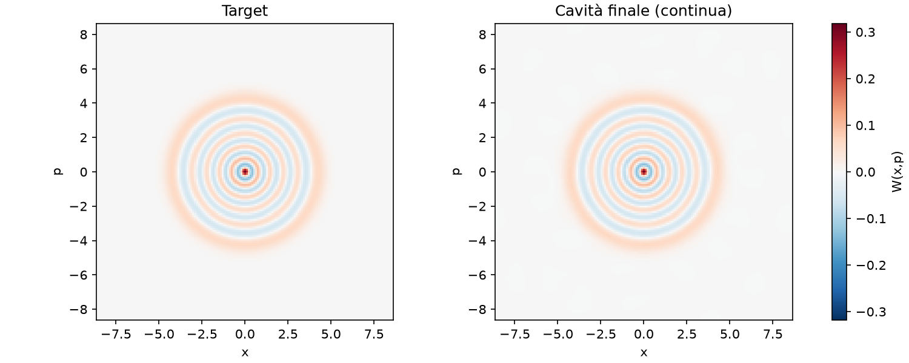
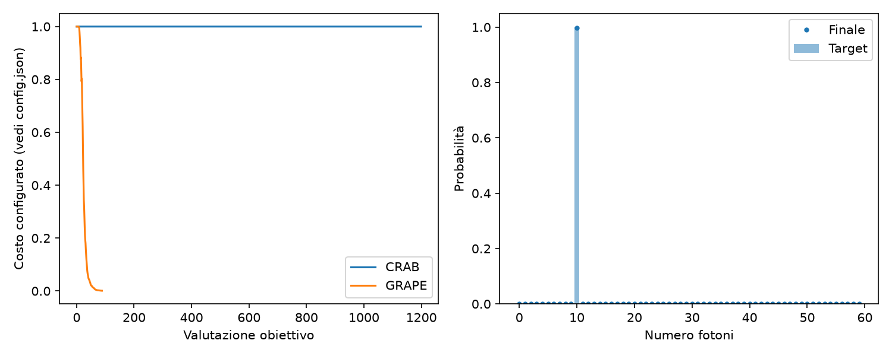
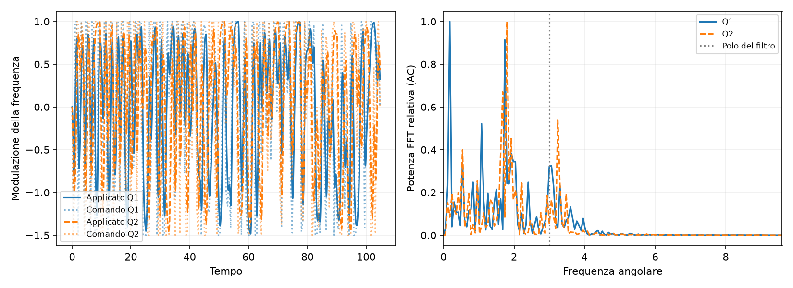
Controlli falliti: nessuno
DettagliMaximum number of function evaluations has been exceeded.; STOP: TOTAL NO. OF ITERATIONS REACHED LIMIT
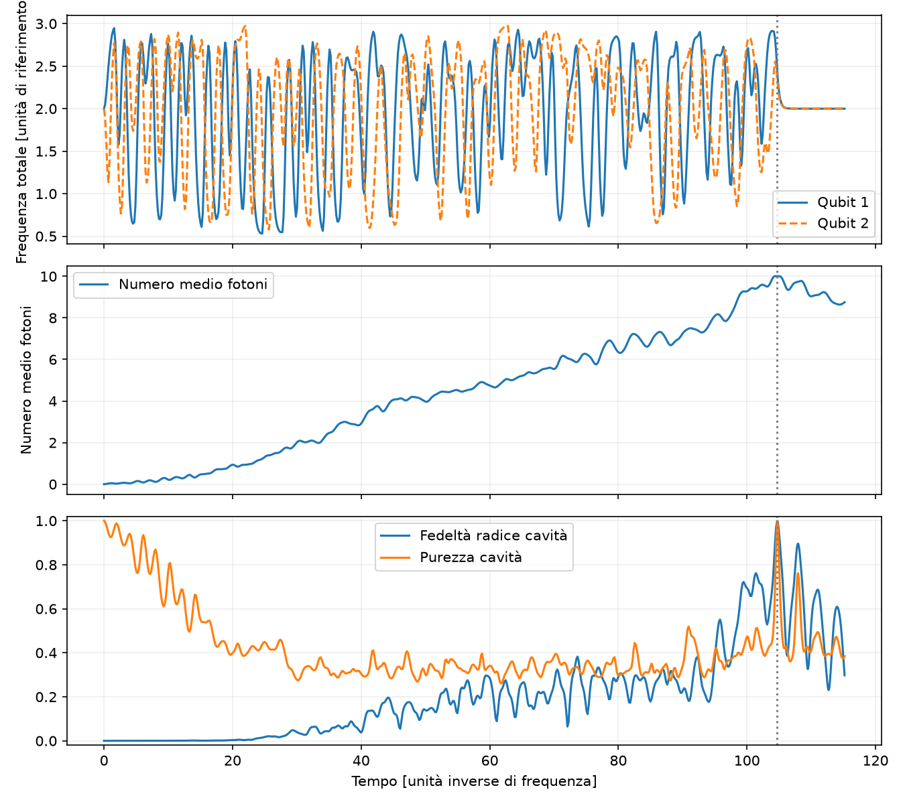
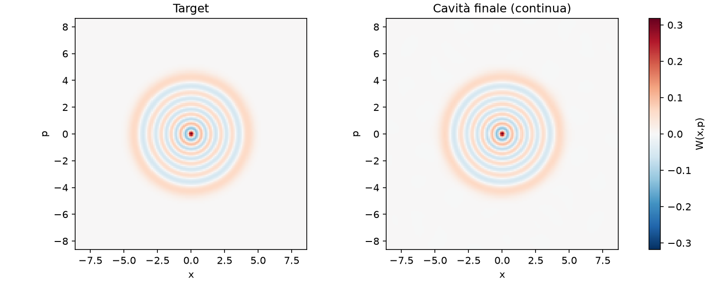
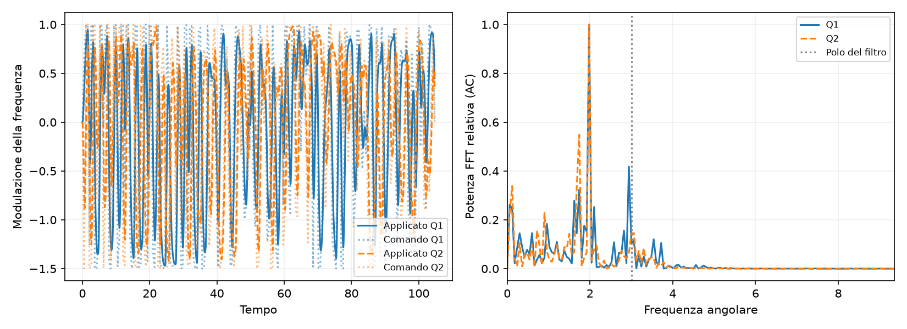